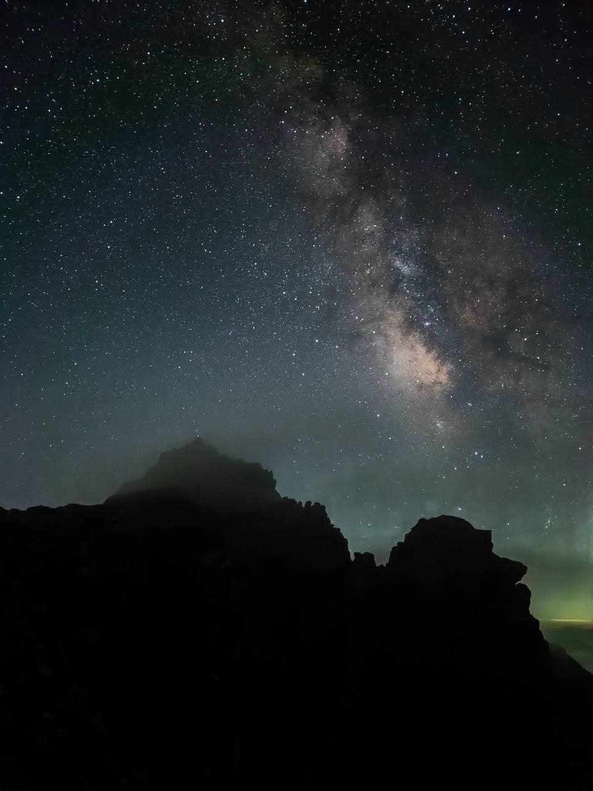

【中央アルプス】16日間の山荘バイトスタート！最初の3日間で歩く木曽駒ケ岳・宝剣岳・伊那前岳
山行日: 2026.07.25 - 07.27

宝剣岳と星空
山行データ＆各ピークの評価
| 日程 |
・7月25日：木曽駒ケ岳 登頂 ・7月26日：宝剣岳 登頂 ・7月27日：伊那前岳 登頂 |
|---|---|
| メンバー | ソロ（なし） |
| 難易度（俺流10段階） |
・木曽駒ケ岳（千畳敷ピストン）： 技術力 1 / 体力度 3 ・宝剣岳： 技術力 3 / 体力度 2 ・伊那前岳： 技術力 1 / 体力度 3 |
| アクセス（片道目安） |
・千畳敷カール → 木曽駒ケ岳：約2時間 ・千畳敷カール → 宝剣岳：約1時間 ・千畳敷カール → 伊那前岳：約1時間 |
装備＆ギア
山荘バイトの休憩時間を利用したサクッと山行のため、極力軽装で臨みました。
- 水・食料： 水1L、行動食（最低限）
- その他： 日帰り基本装備など

2日目に登った宝剣岳。適度な岩場歩きがとにかく楽しい！
山行記録＆ポイントまとめ
16日間にわたる山荘バイトがスタート。その最初の3日間の休憩時間を使って、周囲のピークを巡ってきました。
- お遊びトレイル： 休憩時間を活用したサクッとした山行でしたが、各ピークごとの変化があってしっかり楽しめました。
- 宝剣岳の魅力： 宝剣岳は岩場の手応えがあり、登っていて本当に楽しい良い山だと再確認。
- トラブル： 1日目に将棋頭山まで足を伸ばす予定でしたが、水分保持（1L）に対する水不足により断念しました。夏の水分管理はシビアにいく必要があります。

3日目の伊那前岳。静かな稜線歩きを満喫
振り返りと次回への目標
最初の3日間で主要な3ピークを無事に踏破でき、山荘バイト生活の良いスタートを切ることができました。1日目の水不足による将棋頭断念は反省点ですが、状況に応じた撤退判断ができたのは収穫です。
16日間の滞在期間はまだまだこれから。次回は檜尾岳などへ足を伸ばしつつ、滞在中に様々な山やルートへ挑戦していきたいと思います！
← HOMEへ戻る